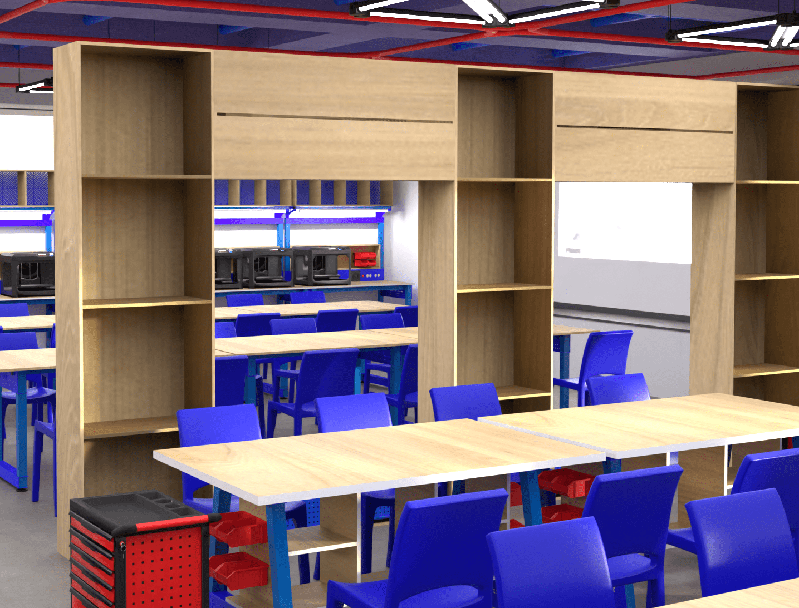

Proyectos




Estudiante de ingeniería informática, Mi experiencia en programación de microcontroladores, incluyendo plataformas como Arduino, ESP-32 y Micro , ha sido fundamental para mi desarrollo en el ámbito tecnológico. Además, mis habilidades en modelado e impresión 3D me han permitido materializar mis ideas y prototipos de manera tangible, añadiendo una dimensión práctica a mis proyectos.
Desde mi infancia, mi curiosidad por entender cómo funcionan las cosas me llevó a desarmar todo tipo de dispositivos. Esta pasión me llevó a explorar la electrónica, la informática y finalmente la programación. Ese mismo afán de conocimiento, me reta día a día a encontrar soluciones a problemas y a siempre estar dispuesto a aprender cosas nuevas.